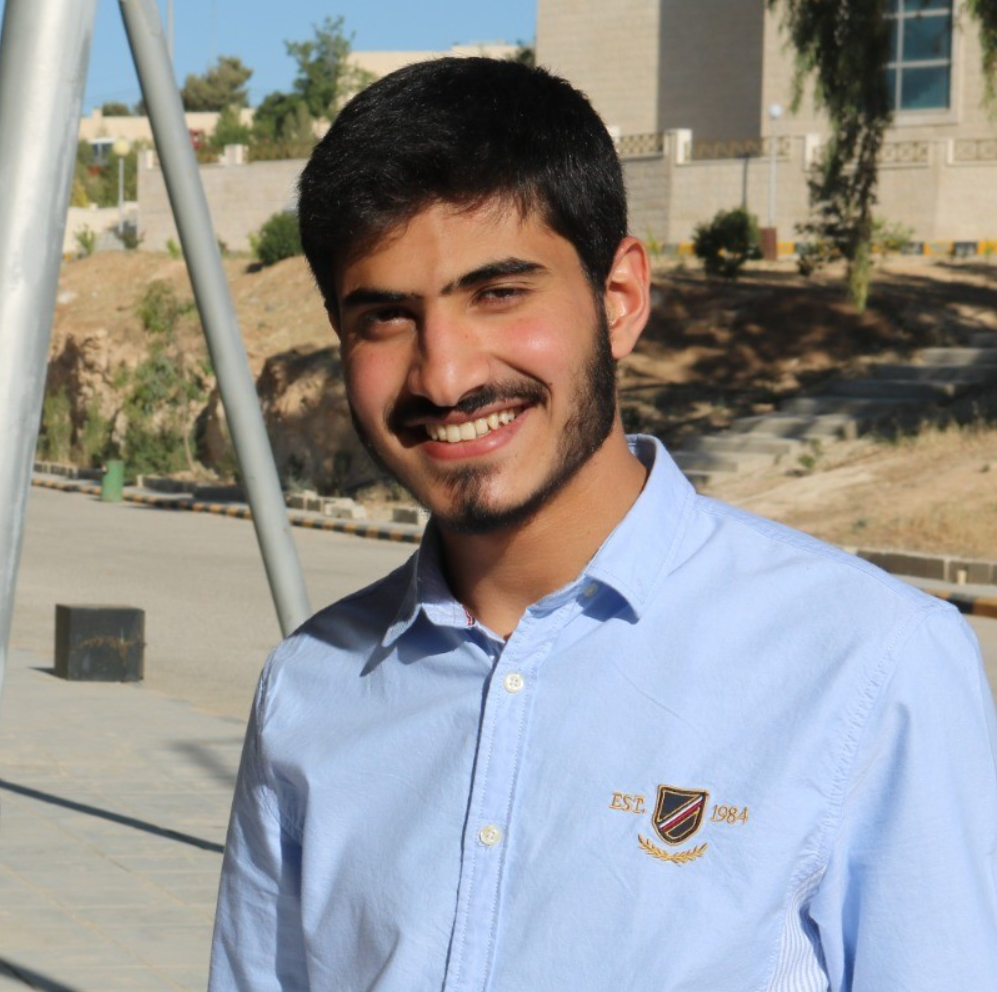

Shams Aldeen Alhajaj

- Email: alhajjaj0shams@gmail.com
- Location: Amman
- Phone: +962789619688
- Email: alhajjaj0shams@gmail.com
- LinkedIn
EDUCATION
Tafila Technical University: Computer Engineering Bachelor
-
At university, I benefited from formal education. I was more inclined towards programming topics. I also
carried out many extracurricular activities and was responsible for one of the academic committees in
the department. I worked to organize activities and review lectures, and workshops in coordination with
experts from outside the university, and I believe that my university experience was beneficial on both the
methodological and extracurricular levels.
PROJECT
Insight Library: (Library website for blind people)
- The Project was developed as part of a personal project aimed at providing blind people with a convenient
and effective experience in accessing audiobooks online. The project offers a specialized web interface
designed to improve the blind user's experience, allowing them to easily interact with and control audio
content using voice commands.
WORK EXPERIENCE
Extensya: Customer Service Agent
- In my role as a Customer Service Representative, I had the honor of receiving a promotion from Tier 1 to
Tier 1.5, where I specialized in the most complex after-sales service cases. I have maintained a clean
record and demonstrated unwavering commitment and professionalism.
- My exceptional performance is demonstrated by consistently high customer ratings, quality department
ratings, and overall work effectiveness. My relationships were and still are positive and friendly with
colleagues and leaders.
- Responsibilities: - Demonstrated strong interpersonal skills in tracking down & communicating listening
to their situations & issues. - Resolving customer's questions about the orders they bought. - Take
proper care of customers & answer all their questions to help them. - Communicate with customers who
have escalated issues to determine beneficial resolution & ensure timely follow-up.
Responsibilities:
- Demonstrated strong interpersonal skills in tracking down & communicating listening to their situations
& issues.
- Resolving customer's questions about the orders they bought.
- Take proper care of customers & answer all their questions to help them.
- Communicate with customers who have escalated issues to determine beneficial resolution & ensure
timely follow-up.
SKILLS
- Arabic
- English
- Laravel
- PHP
- Python
- Java
- JavaScript
- HTML
- CSS
- GitHub
- MS Office
- Customer Service
HOBBIES
Reading Poem
Espicially Arabic
Watching football
Only Barcelona❤️💙
SAMMURY
-
As a recent computer engineering graduate with a passion for web development and a commitment to
continuous learning, I bring strong interpersonal and problem-solving skills from my customer service
background. I am adaptable, a strong communicator, and a team player, ready to excel in diverse
environments and contribute positively to any team.